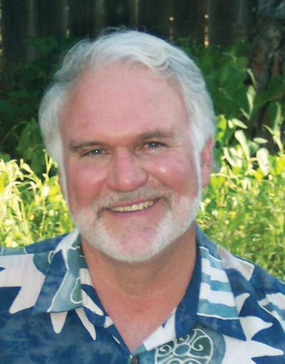

Derk was born in Mesa, Ariz., to Harold and Rosemary Janssen on Oct. 15, 1949. He grew up in Southern California, playing and coaching basketball, camping in the Sierras, and golfing with his father and three brothers. Incredibly, Derk made two holes in one during a single round of golf. A natural leader, Derk was senior class president at Marina High School, and graduated in 1967. Derk’s basketball team, coached by Lute Olsen, was league champion his senior year.
Derk graduated from the University of Arizona in 1972 with a BA in Secondary Education and Interdisciplinary Social Sciences. After teaching high school for five years in Southern California, Derk moved to Mayer, Ariz., to teach social studies and English and coach basketball at Mayer High School. After his daughter Melissa was born, Derk moved to Prescott, Ariz.
Derk became Director of Admissions & Marketing at Prescott College in 1980. During his 16 years there, Derk received awards for his marketing expertise, including the Platinum Medal/Grand Prize from Marketing Higher Education and the NRDC International Eco Award, and served as Co-Director of the Common Ground Project.
In 1991, Derk formed Janssen & Associates, which provided environmental, educational, and marketing consulting. His projects included the EPA Native American Communities Project in EPA Region 5 (Minnesota, Wisconsin and Michigan) and the Youth Development Center at the Navajo Nation.
In 1999, Derk earned a Master of Arts degree in Psychology from Prescott College. From 2005 until his death, he taught English at Prescott High School with infectious enthusiasm.
Derk believed in his community and was committed to preserving the environment. He served on the Central Arizona Land Trust Board of Directors and was Director of the Central Arizona Renewable Energy Network (CAZREN), which provided renewable energy and green design education in Yavapai County.
Derk loved poetry and music. He authored two poetry books, “The Changing Colors in A Sunset” and “At the Forest Edge,” and was working on a third, which his family intends to publish. He mentored and advised many musicians in Prescott, and unofficially managed the band, Neon Angels. He also inspired his brothers to form a rock band (Flurry) that played at the “Rock House” at Prescott College.
Derk lived his life with passion, and he inspired those around him. He loved Prescott. This was his home. Derk may be buried in Pioneers Cemetery, but his spirit and joy for life remains, and will be felt by all who knew him.
Derk is survived by his parents, Harold and Rosemary; his brothers, Andrew (Nikki), Eric (Normajean) and Matt (Vicki); his daughter Melissa (Taylor Waters); and his grandson Jackson; his nieces, Stephanie, Savannah, Sophie and Makena; his best friend Patti Olson; and his girlfriend Kathyanne Doyle.
The Janssen family wishes to thank all those who have been a part of Derk’s life, including his students, his colleagues, and his community of friends in Prescott and beyond for their love and support during this difficult time. Derk loved all of you and lived each day to the fullest. His passing has left an enormous void that must now be filled with fond memories of our time spent together with Derk. From Derk, with love, “Adios Amigos!”
Information provided by survivors.
Orginally posted at the Daily Courier here.